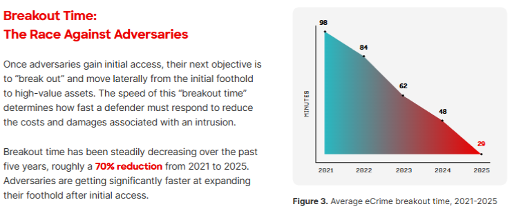
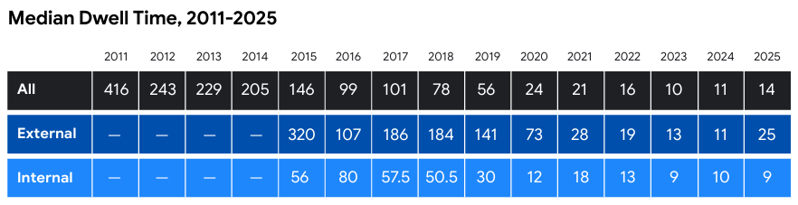

HIVE.CONNECT
01 / 35
Eu construo, compito e transformo segurança em prática
Atuo com AppSec, Pentest Web/APIs e Gestão de Vulnerabilidades, conectando operação real, pesquisa prática e comunidade. Hoje trabalho na CECyber, apoio a hive.connect e trago para o palco o que também testo em laboratório, desafios e projetos próprios.
Campeão no Hacking na Web Day 2026 e no Hack in Cariri 2026, além de autor e campeão do Article Championship April 2025.
“São 22h47 de uma sexta-feira de feriado prolongado.”
03-04-2026
De Quem é a Culpa?
Por que isso aconteceu?
Não porque o time é ruim.
Não porque faltam ferramentas.
Não porque falta cultura.
Mas porque a vulnerabilidade já estava lá antes.
Quietinha. Invisível. Aceita. Adiada. Normalizada.
Um modelo informal, silencioso e contínuo de geração de risco.
Nós montamos uma máquina de produzir vulnerabilidades?
A vulnerabilidade virou um serviço distribuído eficiente.
Pentest e AppSec contínuo não competem, se complementam.
Pentest
Encontra falhas profundas em contexto real
AppSec Contínuo
Reduzir recorrências e escalar prevenção.
Bug Bounty
Amplia criatividade e cobertura em produção
A maior parte das vulnerabilidades sérias não nasce de um erro isolado de código.
Ela nasce da combinação de...
Ela nasce da combinação de...
falta de contexto
pressa
ausência de critérios
segurança pode ser resolvida depois
baixa integração entre áreas
Da exploração pontual à superfície sistêmica
2000s
SQL Injection
2010s
XSS, client-side, session abuse
2020s
APIs, cloud, CI/CD, supply chain
2025/2026
Prompt Injection, HTTP/2 desync, XS-Leaks, business logic
"A superfície de ataque ficou distribuída e sistêmica."
A empresa aprende a errar do mesmo jeito
Backlog inundado de exceções permanentes de risco alto
Segurança atuando apenas como freio tardio
Automação que acelera entrega mas não bloqueia a falha severa
A empresa treina a si mesma para continuar exposta.
Em um modelo disfuncional, o risco é autossustentável
E o ciclo se repete a cada sprint.
O risco virou rotina operacional
01 segurança entra só no final
02 exceção permanente vira arquitetura
03 erro crítico não bloqueia release
04 prazo pesa mais que resiliência
Tudo parecia certo.
✓ documentação pronta
✓ autenticação implementada
✓ integração funcionando
✗ autorização pensada para abuso
O fluxo feliz passou. O ataque também.
Autenticar ≠ Autorizar
✅ Requisição legítima
GET /api/orders/1001
→ Pedido do próprio usuário
❌ ID manipulado
GET /api/orders/1002
→ Dados de outro usuário retornados
Antiga. Conhecida. Devastadora. Testaram sucesso, não isolamento.
Faltaram as perguntas certas no momento certo
Design requisito implícito, não explícito
Teste validou sucesso, não isolamento
Review olhou negócio, não abuso
Threat ninguém modelou ameaça
Credencial comprometida abriu a porta do resto
Permissão excessiva transformou falha em incidente
Componente vulnerável virou crise sistêmica
O atalho de hoje é o incidente de amanhã
“só por hoje”, “só nesse ambiente”, “só até subir”… dois anos depois, o segredo continua ativo.
O atacante precisa de 29 minutos

Breakout Time · CrowdStrike Global Threat Report
Você demora 14 dias para perceber

Dwell Time · Mandiant M-Trends Report
695×
14 dias × 24h × 60min = 20.160 minutos
20.160 ÷ 29 = 695 oportunidades de ataque
Tudo que para de assustar deixa de mobilizar
backlog de falhas críticas sem prazo
exceções permanentes viram arquitetura
ativos sem dono em produção
Não é quem errou
É o sistema que permite
Não seja polícia.
Seja designer de resiliência.
Por design ou por padrão?
Estamos reduzindo vulnerabilidades com intenção ou produzindo por inércia?
IA acelera entrega.
Também acelera exposição.
Risco 01 Código gerado por IA ≠ código seguro
Risco 02 Prompt Injection em agentes de produção
Risco 03 Excessive Agency — IA com poder sem mandato
A barreira: Human-in-the-loop em fluxos críticos.
Dashboard verde ≠ controle real
Uptime belo, scanner tranquilo, painel ok. Mas o que pulsa por baixo?
O atacante vive de desmascarar as aparências do painel.
O problema não começa no alerta
Ele só fica visível nele
Desligue o seu Vulnerabilidade as a Service.